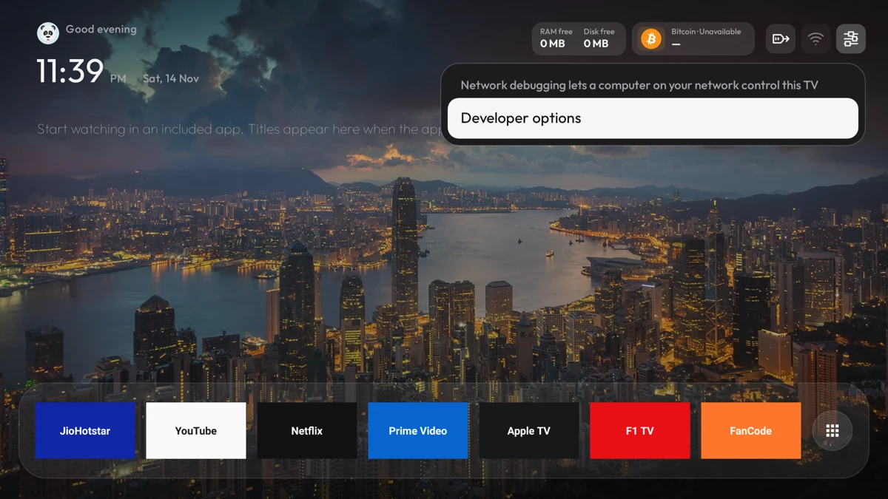

Enable wireless debugging on your TV
Use your TV remote and connect the TV and computer to the same Wi-Fi.
- Open About. On Google TV, look under Settings → System → About. On Android TV, look under Settings → Device Preferences → About.
- Unlock Developer options. Highlight Android TV OS build or Build and press OK seven times. The TV will confirm that Developer options are available.
- Switch on wireless debugging. Go back to System or Device Preferences and open Developer options. Turn on Wireless debugging. Some TVs call it Network debugging or ADB over network.
If your TV has no wireless or network debugging option, try the phone install guide.
Turn debugging off after setup
Once Sweep TV opens, return to your TV’s Developer options and turn off the debugging option you enabled. On the Redmi, Sweep TV settings → System → Network debugging offers a shortcut back to Developer options.
